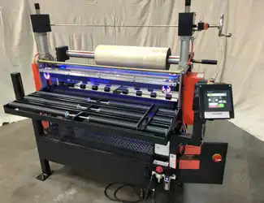
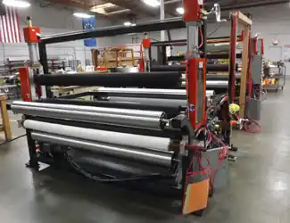
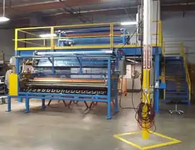

Laminators, Coaters, Applicators and Web Converting Equipment


Industry Leaders with Sheet Metal Laminators and Protective Film Laminators used for Glass, Metals, Plastic, and Wood
|
Three (3) distinct, powered, Protective Tape & Film Applicators/Laminators are built by Walco and designed around your specific tape or film application/lamination widths and frequency of operation. 1. i-WALCO™ Model 82-C-1M Overlay LaminatorThe world’s most popular overlay applicator / laminator model we build. This powered, medium duty, robust protective film applicator is designed for sheet fed operation, top, bottom or both applications and available in widths up to 62" (152 cm).Please click on any of the brief 1 minute links listed below to watch a Walco 82C1M medium duty laminator in action. The video demonstratse how easy it is to laminate smoothly, quickly and economically. |
 |
|
2. WALCO Model 805 Wide Film Overlay Laminator A heavy duty version of the world’s most popular protective tape & film applicator: the Walco model 82-C-1M. Walco’s heavy-duty Model 805 Wide Film Overlay Laminator is designed for sheet fed operation, top, bottom or both applications and is available in application widths up to 88.0” (223.5 cm) . It includes heavy wall, welded tubular steel frame construction and heavy-duty, no deflection rolls. |
 |
|
3. Walco Model 810 Wide Film Overlay Laminator Extra-heavy duty, overlay laminator. Widths on this protective film applicator range from 52.0"-132.0" (335.28 cm). Walco’s extra-heavy duty Model 810 Wide Film Overlay Laminator is designed for sheet fed operation, top, bottom or both applications. It includes heavy wall, welded tubular steel frame construction and heavy-duty, no deflection rolls. As with all Walco overlay laminators, Walco will tailor your new Model 810 applicator to meet your exact protective overlay tape or film application requirements. Detailed specification sheets and photos of the Model 810 Wide Film Overlay Laminator are available on request. |
 |
Any of Walco’s overlay applicators/laminators can also be configured as “In-Line Laminators.” This process is very easily accomplished, and will match your existing line’s feed rates exactly.
Walco protective tape and film laminators apply virtually any overlay material to clean, dry and flat sheet substrates with minimum set-up time. Sheet-to-sheet lamination is easy. Precision roll opening adjustment allows laminating to soft substrates as well as rigid. Foot pedal operation is standard.
With such a wide range of protective tape & film application options available, it’s easy to see why Walco’s line of overlay laminators are the industry leaders.
Contact Walco today for the utmost in flat product protection.
Walco, Inc. - Builders of Robust Laminators, Coaters, Applicators and Converters – since 1949